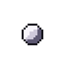
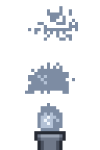
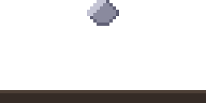

Pixel art smoke and steam animation: smoke puff, steam vent and dust cloud
Each effect here is a Pixelbolt recipe: a short JSON file that runs a small simulation of smoke and air and bakes it into palette pixels, the same pixels every time.
Open one in the Pixelbolt playground, change how it billows, rises or spreads, and download a sprite sheet, an atlas for your engine or a GIF. It is free and runs in your browser, with nothing to install.
Pixelbolt 0.9.1 · 25 October 2026 · On this page: Cartoon smoke puff · Steam vent · Dust cloud from a falling stone
Reading the field names below: an effect's settings sit under effects → its name. An emitter (a source of heat, smoke, liquid or particles) is one entry in its emitters list, found by its "name" where it has one; an obstacle is one entry in obstacles, found by its "symbol". Frames count from 0 (the playground's frame counter starts at 1), and x and y are pixels from the top-left corner.
Cartoon smoke puff

An outlined puff, lit from the upper left, billows out in lobes and thins away: a poof for a jump, a landing or a vanishing enemy.
32 × 32 pixels, 19 frames of 60 ms. It is a one-shot: Pixelbolt's GIF export plays it once, and the atlas JSON marks it "loop": false. This preview repeats it after a 0.6 s pause, as the playground does. Shown at 4×.
Open the smoke puff in the playground
Make it yours
These sit under effects → smoke-puff in the recipe.
outline("k"): the palette key of the one-pixel outline that gives the cartoon look. Delete the line for soft smoke with no outline.expandon each emitter (0.9): how fast each lobe pushes outwards.dissipation(0.14): the share of smoke lost each frame, so how soon the puff thins away.drag(0.25): the share of speed lost each frame, so the puff slows as it spreads.- The
lightandshadowlayers inlook(wandd): the colours for the edges that face toward and away from the light. The light comes from the upper left unless you add"light": [1, -1](upper right) next tooutline.
Steam vent

Steam puffs from a pipe three times a loop, rises, curls and thins.
32 × 48 pixels, 24 frames of 70 ms, looping. Shown at 4×.
Open the steam vent in the playground
Make it yours
These sit under effects → steam-vent in the recipe.
vorticity(0.7): keeps small swirls alive, which makes the steam curl.buoyancy(0.25): how hard the warm steam rises.dissipation(0.11): the share of steam lost each frame, so how soon it thins away.vortexonpuff-1,puff-2andpuff-3(0.8, -0.8 and 0.6): the swirl each puff starts with. Positive turns clockwise.wind(not set yet): add"wind": [0.05, 0]next tobuoyancyto blow the steam to the right.
Dust cloud from a falling stone

A stone drops onto the ground and throws a wave of dust out both ways that billows, slows and thins away: an impact, a landing or a heavy footstep.
64 × 32 pixels, 26 frames of 60 ms. It is a one-shot: Pixelbolt's GIF export plays it once, and the atlas JSON marks it "loop": false. This preview repeats it after a 0.6 s pause, as the playground does. Shown at 4×.
Open the dust wave in the playground
Make it yours
These sit under effects → dust-wave in the recipe.
keyson thestoneobstacle ({ "frame": 1, "y": 20, "over": 5 }): the stone moves down to y = 20 over five frames from frame 1, so it lands on frame 6.starton the four emitters (6): the dust is thrown on the frame the stone lands. Move it when you change the stone'skeys.velocityon the two emitters withcarry([-3.4, -0.8] and [3.4, -0.8]): how fast the dust is thrown left and right, in pixels per frame.dragandreleaseincarry(0.22 and 0.24): a lowerdragthrows the dust farther;releaseis the share of dust handed to the air each frame.
Make your sprite sheet in four steps
- Open an effect above with its Open … in the playground button. The link carries the whole recipe and names Pixelbolt 0.9.1, and the playground renders it in your browser. There is nothing to install and no account.
- Change a value in the Recipe JSON box. The preview renders again after each edit. If the JSON breaks, it says what is wrong, usually with the line number.
- Choose a scale for the frame PNG and the GIF, from 1× to 16×. The sheet and atlas stay at the art's own size (see below).
- Download the files you need (listed below). Copy link makes a link to your edited version.
Export for your game engine
- Sheet PNG: every frame on one transparent sprite sheet.
- Atlas PNG + JSON: the same sheet plus a TexturePacker-style JSON hash with each frame's rectangle, its duration in milliseconds and the named animations. Phaser loads it with
load.atlas. In Godot, Unity or another engine, slice the sheet as a grid of equal cells; the game integration notes explain how. - GIF: the animation for a devlog, a store page or a chat, at the scale you chose. Before you download it, the playground shows its size in pixels and its number of frames.
- Frame PNG: the frame on screen, at the scale you chose.
- Recipe JSON: the recipe itself, to keep, edit or share.
Sheets come at the art's own size, one pixel per pixel. For a bigger sheet, set "scale" in the recipe's top-level "sheet" (add "sheet": { "scale": 4 } if it has none; whole numbers from 1 to 16), or scale it in your engine with nearest-neighbour filtering. Every PNG the playground exports carries its recipe, so you can open it in the playground later (Open file, or drop it on the page) and carry on editing.
The same from the command line
With Node.js 20 or newer, save the recipe (the playground's Recipe JSON button saves it as smoke-puff.fluid.json, or open it from the 0.9.1 package and save it), then run:
npx -y pixelbolt@0.9.1 compile smoke-puff.fluid.json --out smoke-puff.json
npx -y pixelbolt@0.9.1 gif smoke-puff.json --scale 4 --out smoke-puff.gif
npx -y pixelbolt@0.9.1 render smoke-puff.json --out smoke-puffRun them in the folder where you saved the recipe; Pixelbolt won't overwrite existing files unless you add --force. compile runs the simulation and writes the result as an ordinary recipe of frames. gif writes the animation as a GIF. render writes a folder with the sprite sheet, its atlas JSON, every frame as a PNG, an animated PNG, CSS classes, a small Canvas player, a preview page and the recipe. The same commands work for steam-vent.fluid.json and dust-wave.fluid.json.
For AI agents: Pixelbolt also runs as a local MCP server, whose pixel_compile tool compiles these recipes. See Connect an agent through MCP in the README.
Licence
Pixelbolt is free and open source under the MIT licence. The example recipes on this page ship in its MIT-licensed npm package, and its README says the included artwork is original and covered by the same licence.
More pixel art effect guides
- Fire: a campfire, a torch and a hand-drawn flame
- Explosions: a fireball with smoke and sparks, and small particle bursts
- Water: a waterfall, a splash, a drip and a dam break
- Slime and honey: a squashing slime, a bursting slime, pouring honey and a honey drop
- Magic: a spell swirl and a bubbling potion
All guides · The playground · Pixelbolt home
Comparing effect tools? See Pixel FX Designer alternatives: 7 pixel-art effect tools compared. For agents: pixel art MCP servers compared.